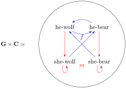

Continued from Section 5.6...
Solution.
I’ve been thinking a lot about the "family tree" problem from Section 4.7 and am wondering if combining two different "binaries" might give me what I’m looking for here. Consider the set \(\mathbf{G} \times \mathbf{C}\) we defined in Session 12 Exercise 3:

What if we choose some map \(\mathbf{P} \rightarrow \{\text{he-bear},\text{she-bear}\}\) as our sum \(X \rightarrow \mathbf{1}+\mathbf{1}\text{?}\)
We have a unique pair of injection maps \(\{\text{he-bear}\} \xrightarrow{j_1} \{\text{he-bear},\text{she-bear}\}\) and \(\{\text{she-bear}\} \xrightarrow{j_2} \{\text{he-bear},\text{she-bear}\}\) defined by \(j_1 ( \text{he-bear} )= \text{he-bear}\) and \(j_2 ( \text{she-bear} ) = \text{she-bear}\text{.}\) For any object \(Y\) and maps \(\{\text{he-bear}\} \xrightarrow{g_1} Y,
\{\text{she-bear}\} \xrightarrow{g_2} Y
\text{,}\) our definition of a sum says there should be exactly one map \(\{\text{he-bear},\text{she-bear}\} \xrightarrow{g} Y\) for which \(g_1 = g j_1\) and \(g_2 = g j_2\text{.}\)
Let’s take \(Y\) to be our product \(\mathbf{G} \times \mathbf{C}\text{.}\) As a product, we should have a unique set of three maps:
\begin{equation*}
\mathbf{1} \rightarrow \mathbf{P} \rightarrow \mathbf{G} \rightarrow \mathbf{1}
\end{equation*}
\begin{equation*}
\mathbf{1} \rightarrow \mathbf{P} \rightarrow \mathbf{C} \rightarrow \mathbf{1}
\end{equation*}
\begin{equation*}
\mathbf{1} \rightarrow \mathbf{P} \mathrel{\substack{\longrightarrow \\ \longrightarrow}} \mathbf{G} \times \mathbf{C} \rightarrow \mathbf{1}
\end{equation*}
By defining \(X\) by a sum, we also force another set of three unique maps:
\begin{equation*}
\mathbf{0} \rightarrow \{\text{he-bear}\} \rightarrow \{\text{he-bear},\text{she-bear}\} \rightarrow \mathbf{G} \times \mathbf{C} \rightarrow \mathbf{1}
\end{equation*}
\begin{equation*}
\mathbf{0} \rightarrow \{\text{she-bear}\} \rightarrow \{\text{he-bear},\text{she-bear}\} \rightarrow \mathbf{G} \times \mathbf{C} \rightarrow \mathbf{1}
\end{equation*}
\begin{equation*}
\mathbf{0} \rightarrow \{\text{he-bear},\text{she-bear}\} \mathrel{\substack{\longrightarrow \\ \longrightarrow}} \mathbf{G} \times \mathbf{C} \rightarrow \mathbf{1}
\end{equation*}
For any person in \(P\text{,}\) consider the compositions \(P \xrightarrow{f} P \xrightarrow{m} P \xrightarrow{f} P\) and \(P \xrightarrow{m} P \xrightarrow{f} P \xrightarrow{m} P\text{.}\)
First, consider a person \(p_1 \rightarrow \text{he-bear}\text{.}\) In the first composition, we’d have \(f p_1 \rightarrow \text{he-wolf}\text{,}\) \(m f p_1 = \text{she-wolf}\) and \(f m f p_1 \rightarrow \text{he-bear}\text{.}\) In the second composition, we’d have \(m p_1 \rightarrow \text{she-wolf}\text{,}\) \(f m p_2 \rightarrow \text{he-bear}\text{,}\) and \(m f m p_2 \rightarrow \text{{she-bear}}\text{.}\)
Next, consider another person \(p_2 \rightarrow \text{she-bear}\text{.}\) In the first composition, we’d have \(f p_1 = \text{he-wolf}\text{,}\) \(m f p_1 = \text{she-wolf}\) and \(f m f p_1 = \text{he-bear}\text{.}\) In the second composition, we’d have \(m p_1 = \text{she-wolf}\text{,}\) \(f m p_2 = \text{he-bear}\text{,}\) and \(m f m p_2 = \text{{she-bear}}\text{.}\)
This gives us an isomorphism between the set of labels \(\{\text{he-bear},\text{she-bear}\}\) and the compositions which fix those respective points \(\{f m f,m f m\}\text{.}\) Since our definition of product requires the maps \(\{\text{he-bear},\text{she-bear}\} \rightarrow \{\text{he-bear}\}\) and \(\{\text{he-bear},\text{she-bear}\} \rightarrow \{\text{she-bear}\}\) to be unique, we’d be unable to use these factor to \(X\) completely because we’d be excluding all of the people in the wolf clan that get "stepped over" through the composition.
This doesn’t feel like a very rigorous solution, but I think as close I’m going to get for now. Let’s keep moving forward.